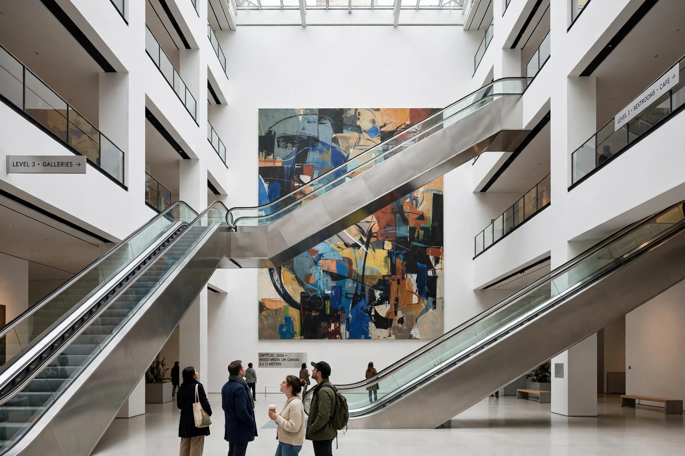

Museum of Modern Art

MoMA's atrium in Midtown Manhattan: a white-walled void crossed by escalators, visitors dwarfed by a huge abstract canvasThe Museum of Modern Art (MoMA) is an art museum located in Midtown Manhattan, New York City, on 53rd Street between Fifth and Sixth Avenues. The institution was conceived in 1929 by Abby Aldrich Rockefeller, Lillie P. Bliss and Mary Quinn Sullivan. Often identified as one of the largest and most influential museums of modern art in the world, MoMA's collection offers an overview of modern and contemporary art, including works of architecture and design, drawing, painting, sculpture, photography, prints, illustrated books, film and electronic media.
Its holdings include Vincent van Gogh's The Starry Night, Picasso's Les Demoiselles d'Avignon and Dalí's The Persistence of Memory, Monet's Water Lilies triptych and Warhol's soup cans. Alfred H. Barr Jr., its founding director, invented the model of the modern art museum with his famous 1936 Cubism and Abstract Art exhibition.